Which Digit?
|
Which Digit? |
In this project, you will design three classifiers: a naive Bayes classifier, a perceptron classifier, and a logistic regression classifier. You will test your first two classifiers on an image data set: a set of scanned handwritten digit images. The third classifier will be evaluated on synthetic data. Even with simple features, your classifiers will be able to do quite well on these tasks when given enough training data.
Optical character recognition (OCR) is the task of extracting text from image sources. The first data set on which you will run your classifiers is a collection of handwritten numerical digits (0-9). This is a very commercially useful technology, similar to the technique used by the US post office to route mail by zip codes. There are systems that can perform with over 99% classification accuracy (see LeNet-5 for an example system in action).
The code for this project includes the following files and data, available as a zip file.
Files you will edit |
|
naiveBayes.py |
The location where you will write your naive Bayes classifier. |
perceptron.py |
The location where you will write your perceptron classifier. |
dataClassifier.py |
The wrapper code that will call your classifiers. You will also use this code to analyze the behavior of your classifier. |
Files you should read but NOT edit |
|
classificationMethod.py |
Abstract super class for the classifiers you will write. (You should read this file carefully to see how the infrastructure is set up.) |
samples.py |
I/O code to read in the classification data. |
util.py |
Code defining some useful tools. You may be familiar with some of these by now, and they will save you a lot of time. |
mostFrequent.py |
A simple baseline classifier that just labels every instance as the most frequent class. |
What to submit: You will fill in portions of naiveBayes.py,
perceptron.py, and dataClassifier.py
and create your own file, logit.py. Please submit these files along with a write up directly to the DropBox. We ask that you also hand-in a hard copy of the write up to Lydia.
To try out the classification pipeline, run dataClassifier.py
from the command line. This
will classify the digit data using the default classifier (mostFrequent) which blindly classifies every example
with the most frequent label.
python dataClassifier.py
As usual, you can learn more about the possible command line options by running:
python dataClassifier.py -h
We have defined some simple features for you. Our simple feature set includes one feature for
each pixel location, which can take values 0 or 1 (off or on). The features are encoded as
a Counter where keys are feature locations (represented as (column,row)) and
values are 0 or 1. The face recognition data set has value 1 only for those pixels identified
by a Canny edge detector.
Implementation Note: You'll find it easiest to hard-code the binary feature assumption. If you do, make sure you don't include any non-binary features. Or, you can write your code more generally, to handle arbitrary feature values, though this will probably involve a preliminary pass through the training set to find all possible feature values (and you'll need an "unknown" option in case you encounter a value in the test data you never saw during training).
A skeleton implementation of a naive Bayes classifier is provided for you in
naiveBayes.py.
You will fill in the trainAndTune function, the
calculateLogJointProbabilities function and the
findHighOddsFeatures function.
A naive Bayes classifier
models a joint distribution over a label 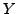 and a set of observed random variables, or features,
 ,
using the assumption that the full joint distribution can be factored as follows (features are conditionally independent given the label):
,
using the assumption that the full joint distribution can be factored as follows (features are conditionally independent given the label):

To classify a datum, we can find the most probable label given the feature values for each pixel, using Bayes theorem:

Because multiplying many probabilities together often results in underflow, we will instead compute log probabilities which have the same argmax:
To compute logarithms, use math.log(), a built-in Python function.
We can estimate directly from the training data:
The other parameters to estimate are the conditional probabilities of our features given each label y: 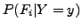. We do this for each possible feature value (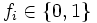).
In this project, we use Laplace smoothing, which adds k counts to every possible observation value:
If k=0, the probabilities are unsmoothed. As k grows larger, the probabilities are smoothed more and more. You can use your validation set to determine a good value for k. Note: don't smooth P(Y).
Question 1
Implement trainAndTune and calculateLogJointProbabilities in naiveBayes.py.
In trainAndTune, estimate conditional probabilities from the training data for each possible value
of k given in the list kgrid.
Evaluate accuracy on the held-out validation set for each k and choose
the value with the highest validation accuracy. In case of ties,
prefer the lowest value of k. Test your classifier with:
python dataClassifier.py -c naiveBayes --autotune
Hints and observations:
calculateLogJointProbabilities uses the conditional probability tables constructed by
trainAndTune to compute the log posterior probability for each label y given a feature vector. The comments of the method describe the data structures of the input and output.
analysis method in dataClassifier.py to explore the mistakes that your classifier is making. This is optional.
--autotune option. This will ensure that kgrid has only one value, which you can change with -k.
--autotune, which tries different values of k, you should get a validation accuracy of about 74% and a test accuracy of 65%.
Counter.argMax() method.
-d faces (optional).
Another, better, tool for understanding the parameters is to look at odds ratios. For each pixel
feature  and classes
and classes  , consider the odds ratio:
, consider the odds ratio:

The features that have the greatest impact at classification time are those with both a high probability (because they appear often in the data) and a high odds ratio (because they strongly bias one label versus another).
Question 2
Fill in the function findHighOddsFeatures(self, label1, label2).
It should return a list of the 100 features with highest odds ratios for label1
over label2.
The option -o activates an odds ratio analysis.
Use the options -1 label1 -2 label2 to specify which labels to compare. Running the following command will show you the 100 pixels that best distinguish between a 3 and a 6.
python dataClassifier.py -a -d digits -c naiveBayes -o -1 3 -2 6Use what you learn from running this command to answer the following question. Which of the following images best shows those pixels which have a high odds ratio with respect to 3 over 6? (That is, which of these is most like the output from the command you just ran?)
| 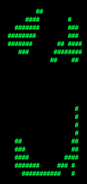 | 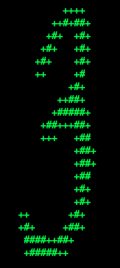 | 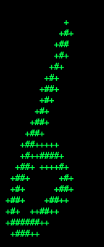 | 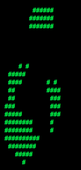 | 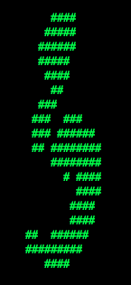 |
perceptron.py. You will fill in the
train function, and the findHighWeightFeatures function.
Unlike the naive Bayes classifier, a perceptron does not use
probabilities to make its decisions. Instead, it keeps a
weight vector  of each class ( is an identifier, not an exponent). Given a feature list
of each class ( is an identifier, not an exponent). Given a feature list  ,
the perceptron compute the class whose weight vector is most similar
to the input vector
,
the perceptron compute the class whose weight vector is most similar
to the input vector  . Formally, given a feature vector
. Formally, given a feature vector  (in our case, a map from pixel locations to indicators of whether they are on), we score each class with:
(in our case, a map from pixel locations to indicators of whether they are on), we score each class with:
Counter.

Using the addition, subtraction, and multiplication functionality of the
Counter class in util.py, the perceptron updates should be
relatively easy to code. Certain implementation issues have been
taken care of for you in perceptron.py, such as handling iterations
over the training data and ordering the update trials. Furthermore,
the code sets up the weights data structure for you. Each
legal label needs its own Counter full of weights.
Question 3 Fill in the train method in perceptron.py. Run your code with:
python dataClassifier.py -c perceptron
Hints and observations:
-i iterations
option. Try different numbers of iterations and see how it influences the performance.
In practice, you would use the performance on the validation set to figure out
when to stop training, but you don't need to implement this stopping criterion for
this assignment.
Question 4 Fill in findHighWeightFeatures(self, label) in perceptron.py.
It should return a list of the 100 features with highest weight for that label. You can display the 100 pixels with the largest weights
using the command:
python dataClassifier.py -c perceptron -wUse this command to look at the weights, and answer the following true/false question. Which of the following sequence of weights is most representative of the perceptron?
| (a) | 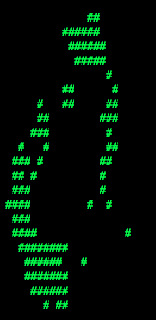 |  |
 |
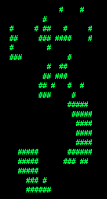 |  |
 |
 |
 |
 |
 |
| (b) |  |
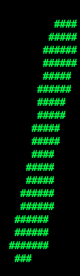 |  |
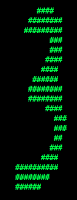 | 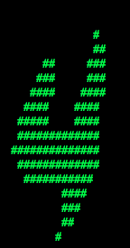 |  |
 |
 |
 |
 |
Hopefully, you found the skeleton code for the naive Bayes and perceptron classifiers helpful. Now, you will implement logistic regression without skeleton code. You are free to take inspiration from the way the naive Bayes and perceptron code was organized. Use lecture slides and the Mitchell Chapter on Naive Bayes and Logistic Regression as a guide for implementation.
We have given you training and testing data for the problem of classifying whether people are registered republicans.
Data set 1:
republicansTest1.py
republicansTrain1.py
Data set 2:
republicansTest2.py
republicansTrain2.py
Here is how we generated the data:
def generateData(n, AorB):
data = []
for i in range(n):
datapoint = {}
datapoint["salary"] = math.floor(random.random() * 200000 )
datapoint["age"] = math.floor( random.random() * 100 )
datapoint["owns a truck"] = 1 if random.random() > .5 else 0
datapoint["republican"] = 1 if random.random() > .5 else 0
if(AorB == "A"):
if datapoint["salary"] > 100000:
datapoint["republican"] = 1 if random.random() > .05 else 0
else:
datapoint["republican"] = 0 if random.random() > .05 else 1
if(AorB == "B"):
if datapoint["age"] / datapoint["salary"] > 1.0/2000.0 :
datapoint["republican"] = 1 if random.random() > .05 else 0
else:
datapoint["republican"] = 0 if random.random() > .05 else 1
data.append(datapoint)
return data
Question 5 Implement Logistic Regression. Put your implementation in one file called logit.py For simplicity, you don't have to use an actual convergence criterion, you can just do a fixed number of gradient updates (and describe your approach in the writeup). Your implementation of Logistic Regression must work on both data sets. No fiddling with the parameter settings when you change data sets!
For your write up:
A. Write out the form of the logistic model you are using (what is the equation for the distribution?, what are the features)?
B. What parameters did you have to set and what values did you set them to?
C. What (if any) data transformations did you have to use?
D. Answer the following questions, for both datasets:
The End. Hope if feels great to be an expert on classification!